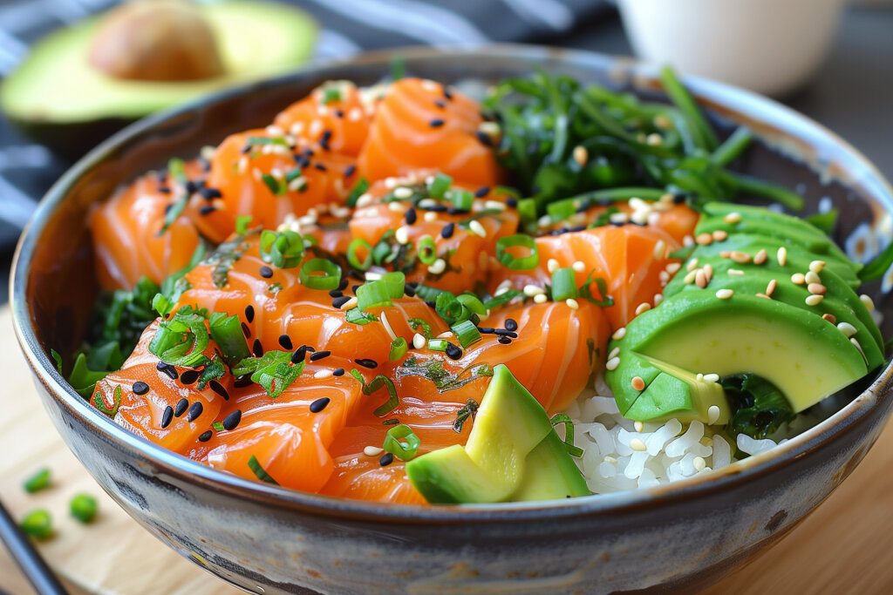

Teriyaki Salmon Bowl

Description
Delicious rice bowl with salmon and teriyaki sauce
Ingredients
- 1/4 cup soy sauce
- 3 tablespoons brown sugar
- 1 small clove garlic, chopped
- 1 tablespoon chopped fresh ginger
- 1 salmon filet
- 1/4 cup grated carrots
- 2 radishes, thinly sliced
- 1 cup shredded red cabbage
- 1 cup cooked rice
Steps
- Preheat oven to 200 degrees celsius and spray baking tray with cooking spray.
- In a small bowl, combine soy sauce, brown sugar, garlic, and ginger.
- Place salmon, skin side down, into baking tray. Pour teriyaki sauce over.
- Bake until fish flakes.
- In a bowl, place rice, then salmon, then spoon on top any remaining sauce. Top with shredded cabbage, grated carrots, and radishes.
Home